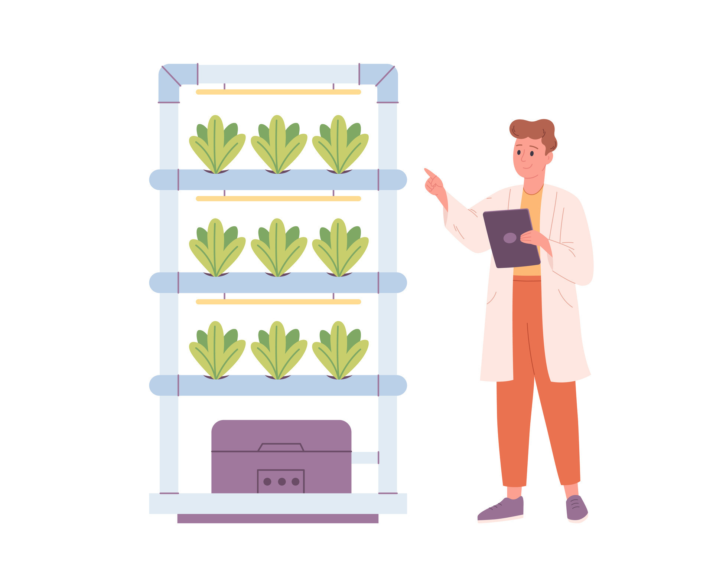
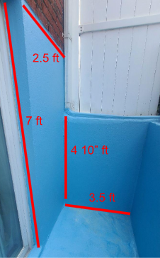

For this project I was given a small corner of my backyard due to the fact that this space was out of the way enough that the view of the backyard could be enjoyed better. While this specific space came with perks such as a nearby water source, an outlet, and steady wifi it does not get as much light as the rest of the backyard. The location is unique in the fact that it is verticle using the wall space as much as possible. It is built on 2 perpedicular walls that intercept, the first is 2.5 ft W x 7ft H, and the other is 3.5 ft W x 4 10 ft H. I also have about 3 feet of floor space extending from the latter wall which is were I will place my water reservoir.
Materials List Explain how to calculate the GHP for the motor and how to obtain the reservoir capacity
